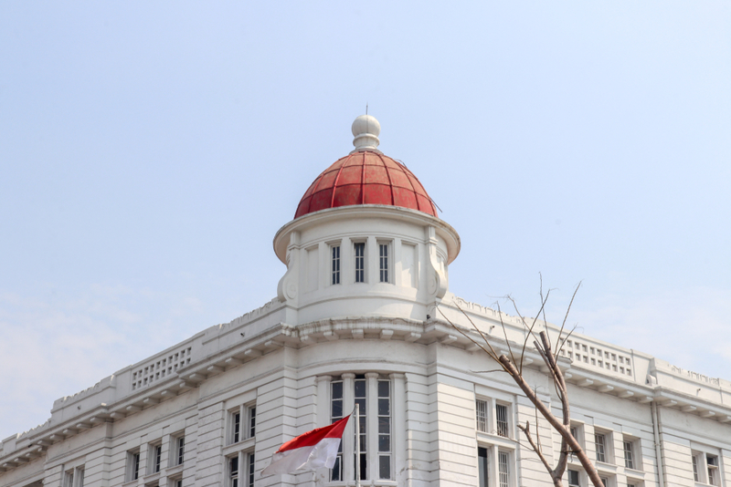

Menelusuri Jejak Sejarah di Kota Tua Jakarta
Kawasan Kota Tua Jakarta sudah dikenal sebagai tempat untuk belajar sejarah perjuangan Indonesia. Setiap hari Kota Tua dipadati para wisatawan lokal maupun mancanegara yang ingin jalan-jalan sambil menikmati suasana Jakarta tempo dulu. Buat yang baru pertama kali datang ke sini, mungkin kamu akan terkejut melihat bangunan-bangunannya.
Kawasan Kota Tua memang identik dengan bangunan tua kental dengan budaya di zaman kolonia. Bangunan di sini kebanyakan sudah berusia ratusan tahun. Beberapa bangunan yang dijadikan objek wisata memang nampak masih cukup kokoh, tapi banyak juga bangunan-bangunan yang sudah terbengkalai.
Kota Tua Jakarta jadi lokasi yang tepat untuk belajar sejarah. Selain karena masih mempertahankan bangunan-bangunan tuanya, di kawasan ini juga memiliki beragam museum yang punya banyak koleksi barang antik. Menelusuri jejak sejarah di Kota Tua bisa kamu jadikan alternatif wisata di Ibu Kota yang nggak monoton. Let’s go to explore!
Stasiun Jakarta KotaStasiun Jakarta Kota mulai dibangun tahun 1882 oleh arsitek asal Belanda bernama Frans Johan Louwrens. Ia mendesain stasiun dengan memadukan teknik modern dan bentuk tradisional Indonesia. Setelah diresmikan pada tahun 1929 stasiun itu diberi nama Stasiun Beos kependekan dari Bataviasche Ooster Spoorweg Maatschapij yang artinya maskapai angkutan kereta api Batavia Timur. Kini kita mengenalnya dengan sebutan Stasiun Jakarta Kota. Sejak 1993 Stasiun Jakarta Kota ditetapkan sebagai cagar budaya oleh Pemerintah DKI Jakarta.
Museum Fatahilah
Museum Fatahilah dikenal sebagai bangunan paling ikonik di kawasan Kota Tua Jakarta. Bangunan ini cukup luas, mencapai 1.300 meter persegi. Dulunya gedung ini sebenarnya balai kota yang dibangun pada tahun 1707 oleh gubernur Jenderal Belanda bernama Johan Van Hoorn. Bangunannya sendiri memang sengaja dibuat mirip istana dam di Amsterdam, Belanda.
Selain menjadi balai kota, beberapa bagian di Museum Fatahilah juga dijadikan tempat pengadilan, kantor, dan penjara bawah tanah. Setelah lepas dari penjajahan, pada tahun 1974 bangunan ini diresmikan menjadi museum yang kita kenal sebagai Museum Fatahilah.
Kalau dua lokasi sebelumnya punya tampilan yang kental dengan Belanda, Toko Merah agak berbeda. Bangunan ini menjadi bukti sejarah peranakan Tionghoa di Indonesia. Toko merah memiliki bangunan yang berwarna merah dan arsitekturnya lekat dengan kebudayaan Tionghoa.
Pada tahun 1730 gedung ini jadi tempat berkumpulnya tokoh-tokoh penting di Batavia. Kemudian pada 1768 - 1808 Toko Merah diubah menjadi hotel khusus pejabat. Setelah Indonesia merdeka kepemilikan Toko Merah sempat berpindah-pindah namun akhirnya pada tahun 2012 Toko Merah direstorasi dan diubah menjadi ruang pameran.
Nah sekarang kita mulai menjelajah ke kawasan Kota Tua Jakarta bagian utara tepatnya ke Museum Bahari. Museum ini punya banyak koleksi yang terkait dengan laut Indonesia. Dulunya bangunan ini sebenarnya tempat penyimpanan komoditi seperti rempah-rempah, kopi, teh, dll. Namun saat ini bangunan ini diubah menjadi museum yang yang mengoleksi ratusan benda bersejarah. Di Museum Bahari banyak benda yang memperlihatkan kedigdayaan Indonesia sebagai negara maritim dari macam-macam replika kapal laut hingga senjata yang biasanya digunakan di angkatan laut.
Pelabuhan Sunda KelapaSetelah seharian menjelajah kawasan Kota Tua, nggak lengkap kalau belum mampir ke Pelabuhan Sunda Kelapa. Pelabuhan Sunda Kelapa menjadi saksi sejarah perdagangan Internasional di Indonesia. Pelabuhan ini sudah ada sejak abad V masehi. Biasanya kapal-kapak kayu bersandar di sini dengan sistem tumpang sirih. Aktivitas bongkar muatnya pun masih dilakukan oleh tenaga manusia jadi memang masih cukup tradisional. Ciri khas pelabuhan ini terletak pada kapal Pinisi Lombo. Keindahan serta kekayaan sejarah yang dimiliki Pelabuhan Sunda Kelapa membuat tempat ini juga fungsi lain menjadi tempat wisata.